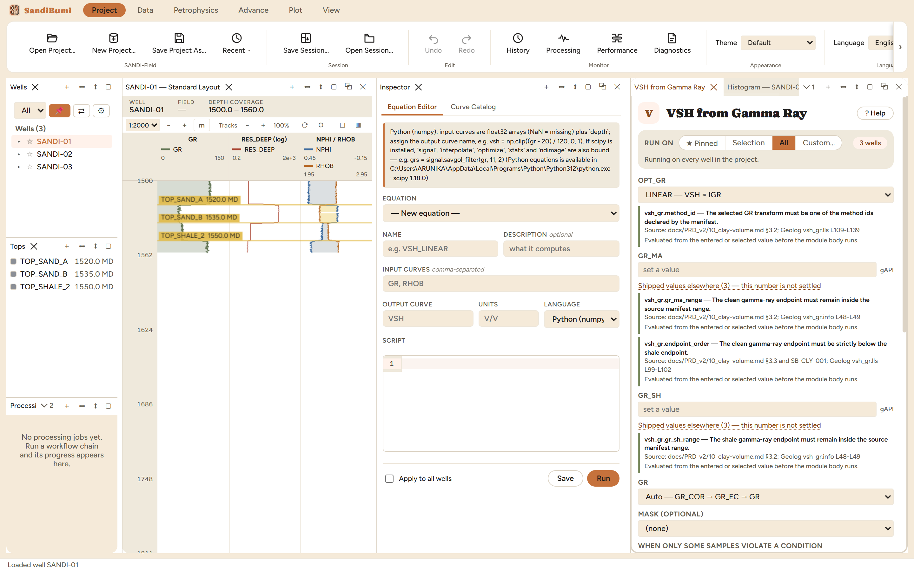
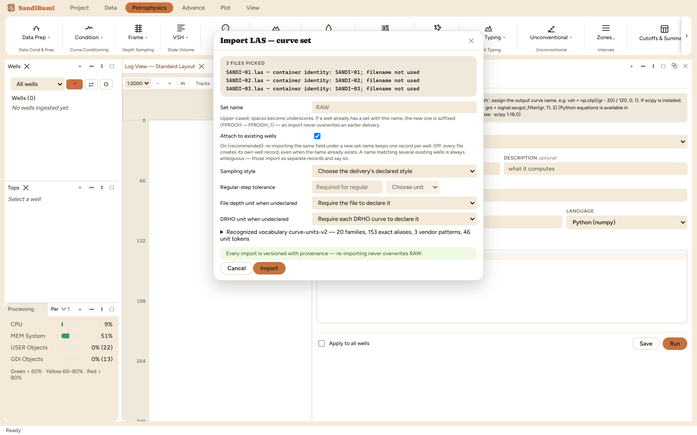
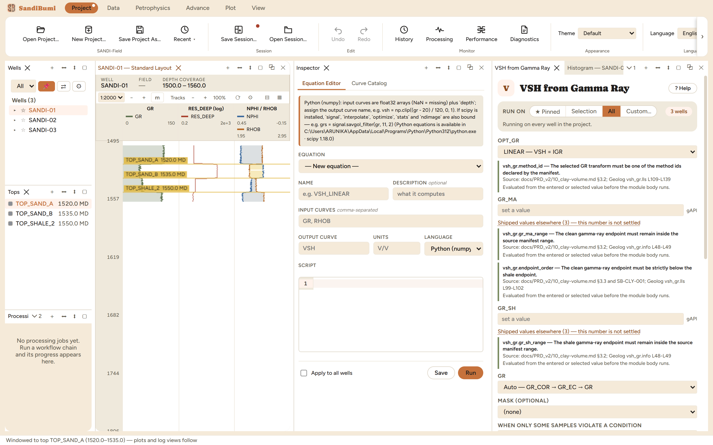
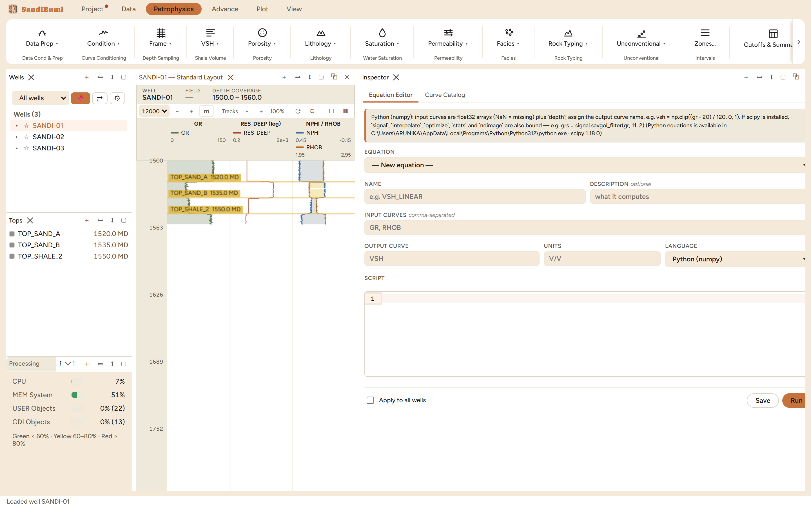
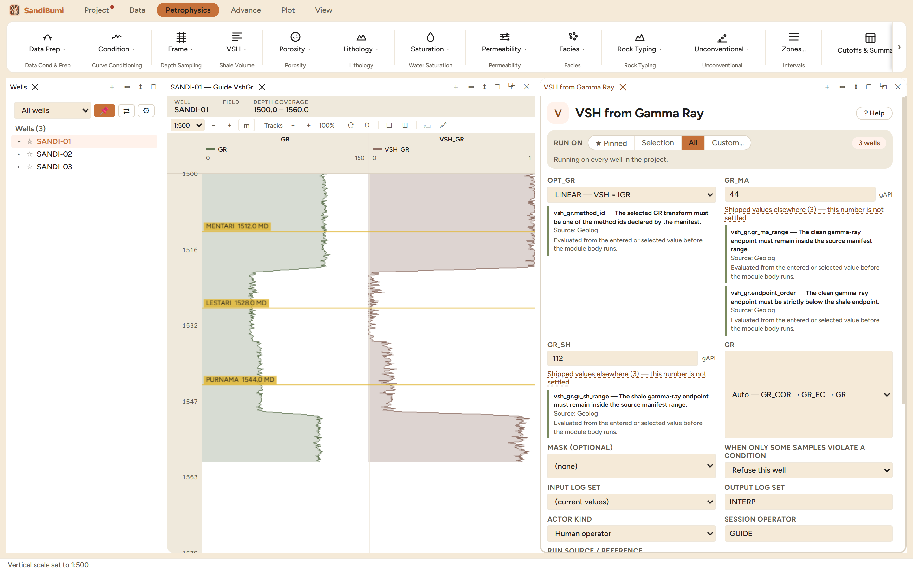
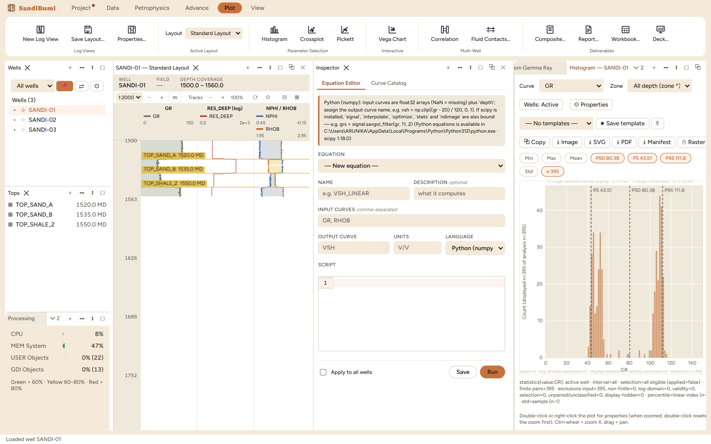
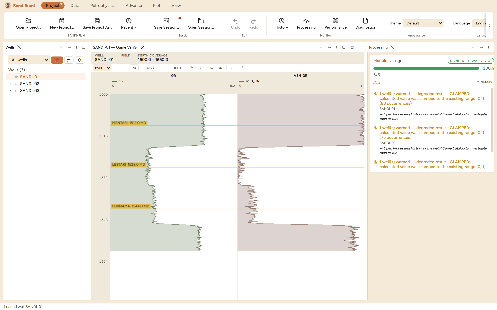
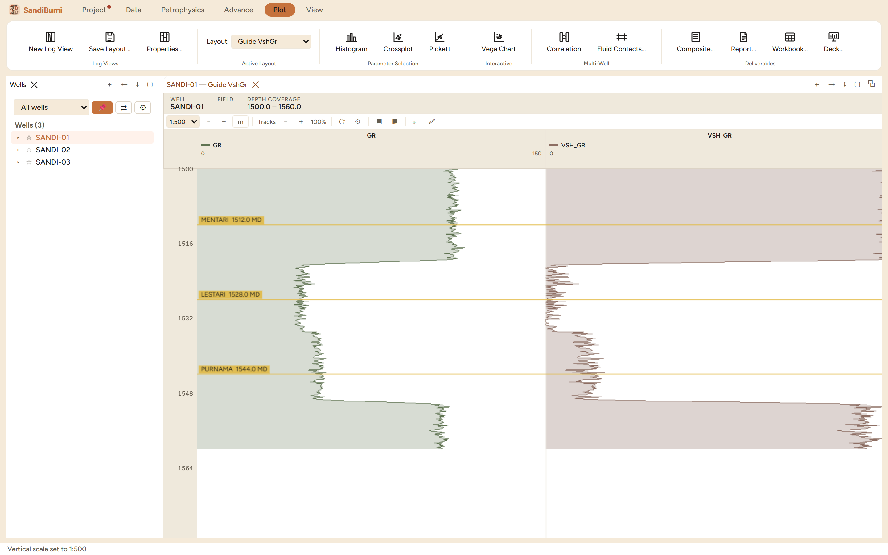
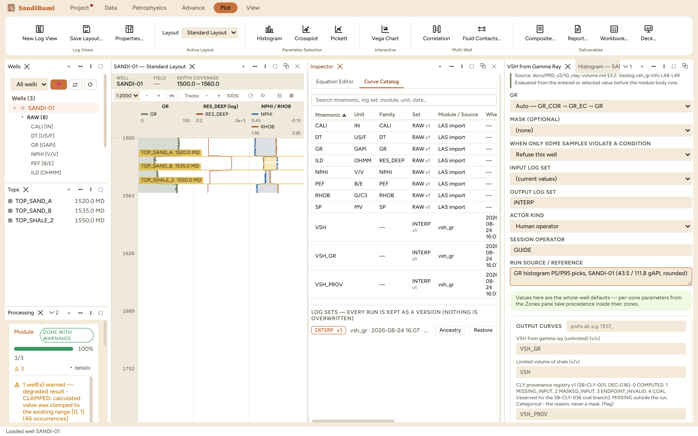
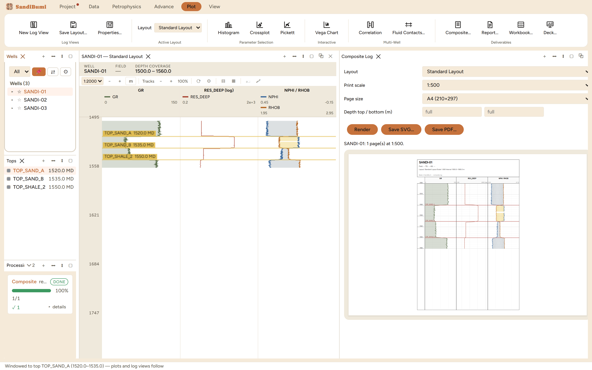

Guidebook · 01 — Getting Started
Your First Hour
1.1 · walkthroughThis guide takes a petrophysicist from a fresh install to a finished one-well
interpretation, following one path. It is not a reference manual: each chapter does one
thing, in order, on the example dataset that ships in the repository
(dataset for test/examples/ — three synthetic wells, SANDI-01/02/03,
one shared geology: a shale cap, a gas sand, a water sand, a base seal). Everything
photographed here is the real application driven through this exact flow.
Setting up the machine is not this guide's job. CONTRIBUTING.md
§1–2 is the install checklist, and docs/INSTALLATION_PREREQUISITES.md lists
exactly which capabilities need an optional Python package and what happens without it.
The short version: the core application — projects, LAS import, log views, plots, every
Rust petrophysics module, PDF/SVG export — needs no Python at all. Python (with
numpy) adds user-written equations; dlisio adds DLIS import;
scikit-learn adds the ML suite; Pillow adds picture imports beyond what the
window itself can decode; xlsxwriter / python-docx /
python-pptx add the Excel / Word / PowerPoint deliverables. A missing
package fails only its own button, with a message naming the interpreter and the pip
command — never the application.
The path
- Before you start — what SandiBumi is, what is optional, and the example dataset.
- First launch and your project — the app opens straight into a workspace; the Project tab owns New / Open / Save Project As / Recent, and the dot that means unsaved work.
- Import your first wells — LAS import and the curve-set dialog: naming the delivery, attach, declaring the sampling style, and reading the import warnings.
- The Wells & Tops pane runs the workspace — clicking a well or a top changes what every panel shows; the ▸ twisty lists each well's deliveries curve by curve.
- Reading the log view — layouts, depth scale, tracks, the neutron-density crossover, and adding a track of your own.
- Run your first module — shale volume from gamma ray, and the four mechanics every later run reuses.
- Where results live — the Curve Catalog, log-set versions, Ancestry, the History — and why a module run is re-run, never undone.
- Export something — a LAS file that reports what it wrote, and a print-scale composite page.
- Where to go next — the Advance tab methods, per-panel Help, and the deeper
documents in
docs/.
1. Before you start
SandiBumi is a desktop application for petrophysical log analysis, built to hold a
whole field — the well count it is engineered for is in the thousands — while staying
responsive on an ordinary field laptop. One project is one file (a
.duckdb database): your wells, curves, tops, core data, computed results
and their full history travel together, and backing a study up means copying one
file.
This guide works on the example dataset in dataset for test/examples/.
Its README.md is worth opening beside this guide: it describes each file,
the ribbon path that imports it, and what to expect — and the same three wells are what
the project's own automated tests parse, so if the app accepts a file there, it accepts
your real file of the same shape. The wells are synthetic but internally consistent
(the core porosities derive from the same density profile the LAS carries), so QC
cross-checks behave like a clean real delivery rather than random noise.
If you are unsure what optional capabilities your machine has, the Project tab's Prerequisites button reports what the app found. (Named gap: that dialog is not photographed in this guide.)
2. First launch and your project
There is no setup wizard. SandiBumi opens straight into a workspace: ribbon on top,
Wells and Tops panes on the left, a log view and Inspector in the middle, status bar at
the bottom. On the very first launch it opens (creating if necessary) a default
project.duckdb; from then on it reopens whatever project you used last.
Your window arrangement comes back too — closing the app and reopening it lands you
where you stopped.

The Project ribbon tab owns the project's lifecycle:
- New Project… / Open Project… / Recent ▾ — switch projects; the group's
caption shows which project is open now (here SANDI-Field). Start this guide
by pressing New Project… and naming the file — ours is
SANDI-Field.duckdb. - Save Project As… — a full copy of the project file to a new location. Note what this is not: day-to-day saving. Imports, module runs and edits are written into the project as they happen; there is no "save your data" step to forget.
- Save Session… / Open Session… — a session is a named snapshot of the workspace (which panels are open, where, showing what), separate from the data. The red dot that appears on the Project tab marks unsaved session state — the arrangement, not your curves.
- Undo / Redo — for data and UI edits. Chapter 7 explains why module runs are deliberately not on this list.
- Monitor group (History / Processing / Performance / Diagnostics) — the application's own record of what it has done. You will meet History and Processing in chapters 6–7.
- Theme and Language — the appearance and UI language selects live here too. Technical terms stay in English in every language, by design.
3. Import your first wells
Imports live in the Data tab: Import Logs ▾ (LAS, DLIS) and
Import Data ▾ (core, SCAL, tops, pictures, deviation surveys, well locations).
Choose Import LAS…, multi-select the three example files
SANDI-01.las, SANDI-02.las, SANDI-03.las, and
the curve-set dialog opens:

Four things happen here, and each is a statement about your data that SandiBumi refuses to guess:
- Which well is this? The file rail at the top shows how each file identified itself — here the LAS header's own well name ("container identity: SANDI-01; filename not used"). File names are never trusted as well names.
- Set name. A delivery lands as a named curve set — leave it blank for
RAW, the primary set. Re-importing never overwrites: a name already used on
a well is suffixed (
FPROOH→FPROOH_1), so an import can never eat an earlier delivery. - Attach to existing wells (on by default) — a file whose well already exists in the project lands as a new set on that well record, instead of creating a duplicate well.
- Sampling style is declared, never sniffed. You state whether this delivery is continuous-regular or continuous-irregular; for regular, you also state the tolerance within which the step must verify. The dialog's own words: SandiBumi "stores both the declaration and its verified effective style; it never infers regularity from the samples." The example wells are exactly regular (0.1524 m step), so declare Continuous regular with any small tolerance — we used 0.001 m. On a real delivery the tolerance is your statement of how much step wobble still counts as regular.
Press Import. The Processing panel (bottom left) reports 3/3 done — with warnings, and the warnings are worth reading once because they show the import's honesty policy. On these files: ILD was recognised as the deep resistivity and aliased to the RES_DEEP family, and several curves were left in their declared units (SP in MV, ILD in OHMM, DT in US/F) because no reviewed conversion rule applies — stated per curve rather than silently converted.
Then import the tops the same way: Import Data ▾ → Import Tops…,
tops_multiwell.csv. The file carries a WELL column, so its 9 tops route to
all three wells by name in one import — no well selection needed, and the result says
exactly where every row went.
Two details you would only notice later, surfaced now: each example well carries a deliberate 1-metre gap in NPHI and PEF (a simulated washout) — you can see it in the Curve Catalog as 388 of 395 valid samples — and the remaining example files (core, SCAL, deviation, XRD…) follow the same probe-confirm-commit pattern; the dataset README's table walks the full order when you want the complete little project.
4. The Wells & Tops pane runs the workspace
The Wells pane is not a list — it is the steering wheel. Clicking a well loads it everywhere at once: the log view retitles to it, plots rebuild on it, and every module pane's Selection scope means it. Click SANDI-01 and the status bar confirms "Loaded well SANDI-01".

The Tops pane below does the same for depth. Click TOP_SAND_A and the status bar states the mechanic in one line: "Windowed to top TOP_SAND_A (1520.0–1535.0) — plots and log views follow." The interval runs from the clicked top down to the next one; log views scroll to it, and plots gain an auto-selected zone option for it. This is how you ask a histogram or crossplot about one sand instead of the whole well — select the top, and the plots follow.
Three smaller controls on the Wells pane, for later:
- The ▸ twisty on each well expands to its deliveries: each curve set, and inside it each curve with its unit (SANDI-01 ▸ RAW (8) ▸ GR [GAPI]…). This is the browser for imported data; computed results appear in the Curve Catalog (chapter 7).
- The ☆ star pins wells into your working set — module panes can run on exactly the starred wells (the Pinned scope you will see in chapter 6).
- The 📌 button on the group bar locks the active well, so a stray click in the tree cannot switch every panel while you are mid-interpretation.
- The well-group select ("All wells") filters the whole application to a named group of wells once you have one — useful from the tens of wells upward, ignorable today.
5. Reading the log view

The log view's header states what you are looking at — well, field, depth coverage — and its toolbar owns the vertical presentation: the depth scale select (1:2000 down to 1:200; the status bar confirms each change), depth-unit display, and track-width controls. Ctrl + scroll wheel zooms at the cursor; plain scroll pans. The view follows the selected well and the selected top, as chapter 4 showed.
What the default Standard Layout draws is deliberately conventional: GR with a shading fill, deep resistivity on a log scale, and NPHI/RHOB together on compatible scales with crossover shading — the yellow fill between the curves where they cross is the classic gas-effect display, and you can see it light up inside SAND-A on these wells.
A layout is a named thing, chosen in the Plot tab's Layout select, and edited through Plot → Properties…: tracks are added, reordered and removed there, and each track holds its curves with their scales, colours and fills. Chapter 6 ends by adding a VSH track this way. One behaviour worth knowing before you invest effort: Properties… edits live in that panel — press Save Layout… to keep an arrangement as a named layout, or it stays with the panel it was made in (ours vanished when we restarted the app without saving, which is exactly what unsaved means).
6. Run your first module
You have three wells with GR, resistivity, neutron and density, and tops splitting them into a shale cap, two sands and a base seal. The first interpretation step is the same as it would be on paper: a shale volume from gamma ray. This chapter runs it, and on the way meets the four mechanics every later module run reuses — where parameters come from, who the run says it was run by, what "degraded" means, and where the output went.
Open the module
Modules live in the Petrophysics ribbon tab, grouped the way you would group them yourself: Data Prep, Condition, Frame, VSH, Porosity, Lithology, Saturation, Permeability, Facies, Rock Typing, and so on. Click VSH ▾ → VSH from Gamma Ray.
It opens as a working pane docked beside your log view — not a popup — because you will tune it while looking at the log. Every module pane in SandiBumi is built the same way, generated from the module's own manifest, so once you can read this one you can read all of them.

Reading the pane top to bottom:
- RUN ON — who gets computed. It opens on All ("Running on every well in the project", here 3 wells). Selection is the well you clicked in the Wells pane; Pinned is the wells you starred; Custom… is an explicit list. One run, many wells — that is the normal way to work, not a batch afterthought.
- OPT_GR — the GR-index transform (LINEAR here; the dropdown holds the nonlinear forms). Notice the text under it: every choice and every range check in this pane cites where it came from — a spec section, a reference implementation, line numbers. That is not decoration; it is the app telling you its defaults are sourced, not invented.
- GR_MA and GR_SH have no default. The clean-sand and shale gamma-ray endpoints are a property of your basin, and a number that ships pre-filled would be somebody else's calibration silently applied to your field. The link under each field — "Shipped values elsewhere (3) — this number is not settled" — shows where other installed tools carry values, precisely so you can see they disagree. You will supply these two numbers yourself, next.
- GR input — "Auto — GR_COR → GR_EC → GR" is the preference order: if a corrected gamma ray exists on the well it is used, otherwise the raw curve. You can pin a specific mnemonic instead.
- MASK — optionally name a flag curve (for example a bad-hole flag) and every flagged sample becomes missing in the output.
- INPUT / OUTPUT LOG SET — the run reads "(current values)" and writes into a named output set, INTERP by default. Chapter 7 shows what that buys you.
- The green callout is worth memorising: "Values here are the whole-well defaults — per-zone parameters from the Zones pane take precedence inside their zones." When you later give SAND-A its own endpoints, this pane's numbers keep governing everywhere else.
Pick the endpoints from your own data
Where do GR_MA and GR_SH come from? From the histogram — the same place you would pick them in any interpretation. Open Plot → Histogram; it builds for the selected well and opens on GR.

SANDI-01's gamma ray is cleanly bimodal — sands on the left, shales on the right — and the stat chips above the plot do the reading for you: P5 = 43.5, P95 = 111.8 gAPI, drawn as dashed lines on the plot. We round to GR_MA = 44 and GR_SH = 112 and type them into the pane. Percentile endpoints (rather than min/max) are a deliberate choice with a visible consequence you will meet in a moment.
These numbers are picks from this dataset, made the way the guide shows so you can repeat the method on your own field. They are not recommended values for anywhere.
The run wants to know who and why
Press Run VSH from Gamma Ray. The first time, it refuses — in the pane, by name:
Enter the session operator identity before computing.
Every run in SandiBumi is recorded with who ran it. Type your name or initials into Session operator. Run again and it refuses once more:
Enter the source/reference covering this run's explicit values.
You typed explicit numbers (44 and 112), so the run demands the reference that
covers them — the same discipline a reviewed study applies to every parameter. Our
honest citation is simply where the picks came from: GR histogram P5/P95 picks,
SANDI-01 (43.5 / 111.8 gAPI, rounded). This text is stored with the run and
follows the output curves; when someone asks in two years where 44 came from, the
answer is attached to the curve, not lost in a notebook.
Read the outcome — "degraded" is the app being honest
Run again. The pane reports into the Processing panel and summarises:
0 clean · 3 degraded · 0 failed. Open Processing → details for the per-well report.

Expand details in the Processing panel. Each well says the same thing:
degraded result - CLAMPED: calculated value was clamped to the existing range [0, 1] (46 occurrences)
This is the consequence of the P5/P95 pick, reported instead of hidden. SANDI-01's GR actually spans 41.5–115.2 gAPI; every sample cleaner than 44 or shalier than 112 computes a GR index below 0 or above 1, and the limited output clamps it. About 46 of 395 samples — the tails the percentile pick deliberately excluded. "Degraded" never means the run half-worked; it means the result carries a warning you should read once and then either accept (as here — clamping at the endpoints is exactly what percentile picks imply) or fix by re-running with different picks. A well that actually failed says failed, and writes nothing.
Where the answer went
The run wrote three curves per well into the INTERP output set — open the Inspector's Curve Catalog tab to see them listed with the RAW curves:
- VSH — the limited volume of shale, 0 to 1. This is the interpretation.
- VSH_GR — the unlimited GR index (here −0.04 to 1.05). The apparent answer and the corrected answer get different names on purpose, so a report can never quote one as the other.
- VSH_PROV — a per-sample flag saying why each sample is what it is (computed, input missing, masked, endpoint invalid). Categorical — a reason, never a mask.
The catalog's log-set line states the storage rule in one breath: every run is kept as a version — nothing is overwritten. Re-running with better endpoints writes INTERP v2; v1 stays. That is why a module run is re-runnable, not undoable: undo is for edits, while a run you disagree with is simply run again, and both versions remain comparable. Each computed curve also carries an Ancestry action — the recorded account of the module, inputs and parameters that produced it. (Named gap: the ancestry view itself is not yet walked through in this guide.)
Put VSH on the log
Seeing the number beside the rock is the point. With the log view active, open
Plot → Properties…, press ＋ to add a track, name it VSH, set its single
curve's mnemonic to VSH with a 0–1 scale, and OK.

At 1:500 the interpretation reads at a glance: VSH near zero through both sands, near one in the shale cap and below TOP_SHALE_2, tracking the gamma ray it came from. The Curve Catalog beside it shows the three INTERP v1 curves; the Processing panel still holds the per-well report. If anything looks wrong, the pane you ran from is still open — change a number and run again. That loop — pane, run, look, adjust — is how every module in SandiBumi is meant to be worked.
One more habit worth forming now: click any pane and press the ? Help button (in the pane header, or Project → Help for the active panel). A module pane's help is the module's own documentation, the same text its manifest carries.
7. Where results live
Everything the project holds about a curve is on display in one table: the Inspector's Curve Catalog (also a button on the Data tab).

Each row carries the mnemonic, unit, family, which set and version it
belongs to, which module or import produced it and when, how many samples are
valid out of how many, and min / max / mean. Two different kinds of row are visible
after chapter 6: the RAW v1 rows from the LAS import, and the INTERP v1 rows stamped
vsh_gr with their run timestamp. A computed curve's Ancestry action
holds the recorded account of how it was made — module, inputs, parameters, and the
reference you typed at run time.
Below the table, the log-sets line makes the storage promise explicit: "every run is kept as a version — nothing is overwritten." Each re-run of a module writes the next version of its output set; earlier versions stay, listed and restorable. This is the half of the mental model that replaces "undo": Undo / Redo (Project tab) reverses edits — a curve you hand-edited, a top you moved, a value you changed in the Database Inspector — while a module run you disagree with is not reversed but re-run, and the versions sit side by side for comparison.
Two panels complete the record:
- Processing (Project → Monitor) shows live and recent jobs with per-well ✓/⚠/✗ outcomes — this is where chapter 6's degraded report lived.
- History is the permanent operations log, kept in the project itself: imports, module runs ("Ran VSH from Gamma Ray on 3 wells"), project events, session saves — with an Export… button when you need the record outside the app.
And when something goes wrong on a machine far from you, Project → Diagnostics builds a single plain-text file a user can read in full and then send — timings and operation records, no well names, no paths, no curve values.
8. Export something
An interpretation that cannot leave the application is not finished. Two exports cover the first hour; both live one click from the work.
Export LAS (Data tab, with a well selected) writes the well back out as LAS 2.0 — standard curves and computed results together — and then tells you exactly what it did. Exporting our SANDI-01 reports: 395 rows; 12 of 17 held curves written, the other 5 named individually with the reason (they were the RAW set's copies of curves already written from the standard set — deduplicated, not lost); a precision statement (727 values reduced going from f32 storage to fixed-decimal LAS text); and a self-check in which SandiBumi re-reads its own output before calling the export good. If a curve is missing from an export, the report says so by name — silence is not an option it has.
Composite Log (Plot tab → Composite…) is the print deliverable: a log plot laid out at a true printed scale, not a screenshot of the screen.

Pick the layout, the print scale (1:500 here), the page size and optionally a depth window, then Render — the pane shows the paginated result ("SANDI-01: 1 page(s) at 1:500") with the title block carrying the well, layout, scale and interval. Save SVG… writes vector graphics; Save PDF… writes a multi-page PDF with no external dependencies. At 1:500 on A4, a metre of section is two millimetres on paper — the scale means what it says.
The Plot tab's Deliverables group goes further — Report… (the full PDF study document), Workbook… (Excel), Deck… (PowerPoint) — but those belong to a later session; the office formats need their optional Python packages (chapter 1), and the native PDF/SVG paths shown here never do.
9. Where to go next
The first hour ran one module on one log. The application widens from here in three directions, and you have already learned the mechanics each one reuses.
More of the same, deeper. Every group in the Petrophysics tab — porosity, lithology, saturation, permeability, facies, rock typing, cutoffs and summaries — works exactly like chapter 6: a manifest-generated pane, cited parameters, custody, versioned output. The module books of this guidebook (the Contents page) carry one chapter per module, and each chapter's "What the application enforces" section is generated from the same manifests the panes are built from — its descriptions, defaults, sources and pre-run checks are exactly what the running application enforces. The example dataset's README lists the import order for core, SCAL, deviation and the rest; with those loaded, the saturation-height tools and the QC crossplots have real input. Zones (Petrophysics → Zones…) is where per-interval parameters live — the green callout from chapter 6, made concrete.
The Advance tab holds the flagship in-house methods, promoted out of the
generic dropdowns: the SSC / SSPW sand-silt-clay methods, RtC and
IMTS low-resistivity saturation with their Calibrate… tools,
Thin Beds, the SandiMin multi-mineral solver, the ML Models
suite, and the core-imaging and petrography workbenches (core photos and photo logs,
plate conditioning, pore-area measurement, the mineral classifier, plug QC). Each is
documented by its own pane's ? Help; the method mathematics is banked in
docs/ (method_ssc_sspw.md,
method_lrlc_rtc_imts.md, and the record_*.md build
records).
Many wells at once. Everything you did on three wells was already multi-well — the RUN ON pill, the tops that routed by well name. When the well count grows, the same pattern scales through the Petrophysics → Batch tools: workflow chains (an ordered module pipeline across the field), Monte Carlo uncertainty on top of a chain, and the Field Dashboard that rolls the pay summary up per zone across every well. Those have their own chapters in the tool books; the mechanics will already feel familiar.
Wherever you are in the application: click the pane, press ? Help. And when
the answer is not there, the docs/ folder of this repository is the
deeper record — this guide is the front door, not the whole house.